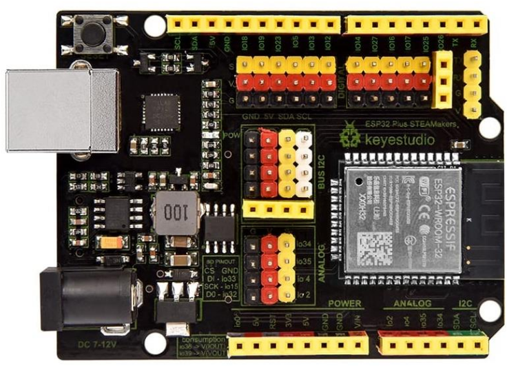

En nuestro caso como elemento de control vamos a utilizar una placa de control programable ESP32 Steamakers por varios motivos:
- Basada en ESP32 lo que significa, capacidad de proceso, conectividad wifi y bluetooth, etc.
- Factor de forma Arduino y compatibilidad con shields de Arduino.
- Fácil conexionado. Pinout macho disponible para los puertos de la placa, luego el conexionado se puede hacer sin protoboard.
- Sensores integrados: energía, temperatura y campo magnético.
- Lector de tarjeta microSD incorporada.
- Arduinoblocks es totalmente compatible con la misma, pensado para todas sus funcionalidades.
- Detallada documentación técnica.
- Prolija documentación didáctica.
- Calidad de construcción y soporte de fabricante.
- Diseñada en España por docentes para la enseñanza.
- Varios distribuidores en España.